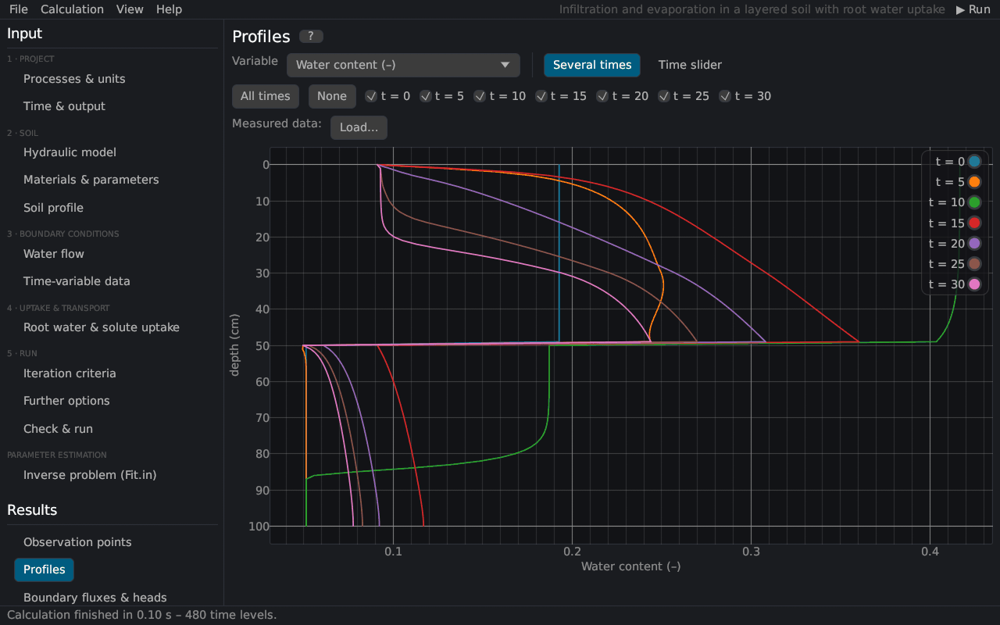
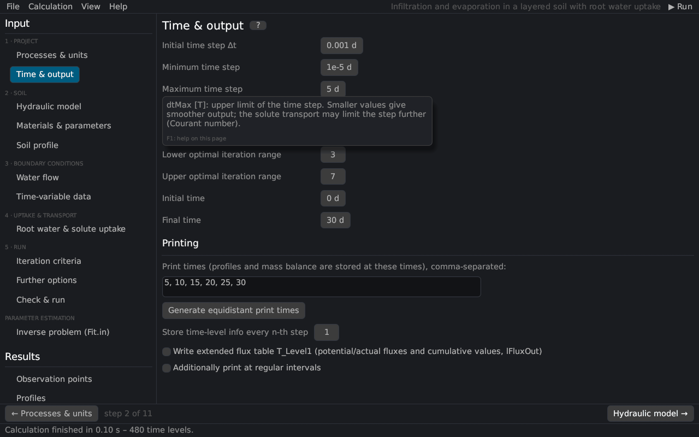
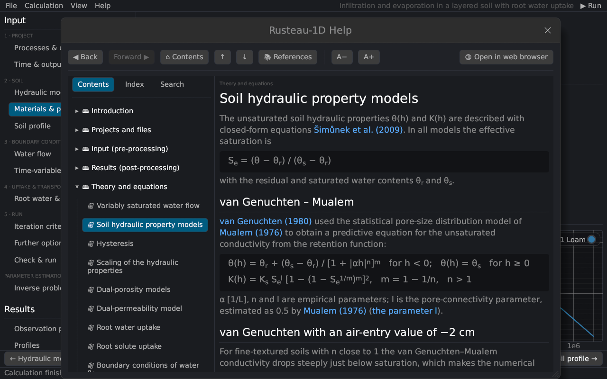

The main window


Menu bar
| Menu | Commands |
|---|---|
| File | New project (Ctrl+N), Examples, Open project (Ctrl+O, .h1dr or a HYDRUS-1D .h1d), Import HYDRUS-1D project folder…, Import optimization file (Fit.in)…, Save (Ctrl+S), Save as… (Ctrl+Shift+S), Save as HYDRUS-1D project, the option Save also writes a HYDRUS-1D project, Export results (CSV)…, Quit – see Projects and files |
| Calculation | ▶ Run (F5) and ■ Stop |
| View | dark and light theme |
| Help | help on the current page (F1), contents, getting started, theory, references, the help in the web browser, export of the HTML help, keyboard and mouse, about |
At the right end of the menu bar are the project title (with * when there are unsaved changes) and the ▶ Run button (▶ Run (inverse) for a parameter estimation, ■ Stop while a calculation runs).
Navigation panel
The left panel lists the input pages in the steps of a project (workflow):
- Project: Processes & units, Time & output
- Soil: Hydraulic model, Materials & parameters, Soil profile
- Boundary conditions: Water flow, Time-variable data (with time-variable or atmospheric conditions), Meteorological data (with meteorological ET)
- Uptake & transport: Root water & solute uptake, Heat transport, the five solute pages – each shown only when the process is switched on
- Run: Iteration criteria, Further options, Check & run
and Parameter estimation with the page Inverse problem (Fit.in). Below follow the results pages; they are enabled after a run (the soil hydraulic properties can be viewed at any time).
Pages
Every page has a title with a ? button that opens its help topic (as F1). Inputs show a tooltip with their meaning, unit and typical values when the mouse rests on the label or the value:


Number fields accept typing (click, type, Enter) and dragging with the mouse; a comma is accepted as decimal separator and d / D as exponent (1d-3, as in Fortran files). Changes mark the project as modified.
Workflow bar and status bar
On the input pages a bar at the bottom leads to the previous and the next page of the workflow (step k of n); on the last page it runs the calculation. The status bar shows messages (files written, problems, the end of a run) and, during a run, a progress bar with the current time.
Help window


The help window has a table of contents, a keyword index and a full-text search, back and forward buttons (Alt+← / Alt+→), buttons for a larger or smaller text, and Open in web browser, which writes the help as HTML pages and opens the current topic in the browser.
Drag and drop
Dropping a .h1dr file, a HYDRUS-1D .h1d file or a HYDRUS-1D project folder (or any file in it) onto the window opens it; while dragging, the window shows what the drop would do.
Themes
View → Dark theme / Light theme switches the colours. Plots are meant for inspection; for figures use the CSV output.